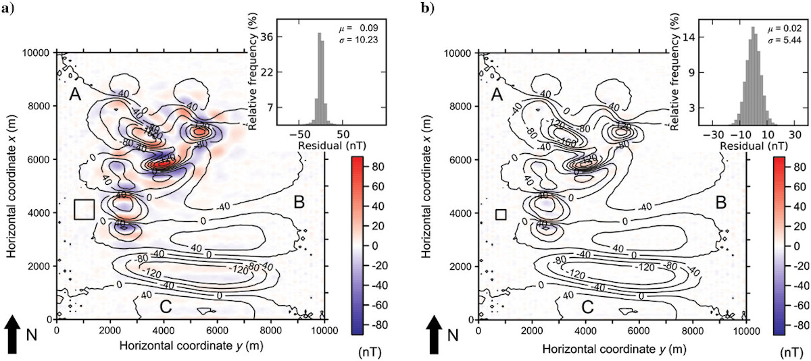

Oliveira Jr, V. C., V. C. F. Barbosa, and L. Uieda (2013), Polynomial equivalent layer, Geophysics, 78(1), G1–G13, doi:10.1190/geo2012-0196.1
The Polynomial Equivalent Layer (PEL) is implemented in the open-source Python
library Fatiando a Terra.
There are two classes for running the PEL in module fatiando.gravmag.eqlayer:
PELGravity for fitting gravitational field components and
PELTotalField for fitting the total field magnetic anomaly.
Both classes were introduced in
version 0.2
of the library.
We have developed a new cost-effective method for processing large-potential-field data sets via the equivalent-layer technique. In this approach, the equivalent layer is divided into a regular grid of equivalent-source windows. Inside each window, the physical-property distribution is described by a bivariate polynomial. Hence, the physical-property distribution within the equivalent layer is assumed to be a piecewise polynomial function defined on a set of equivalent-source windows. We perform any linear transformation of a large set of data as follows. First, we estimate the polynomial coefficients of all equivalent-source windows by using a linear regularized inversion. Second, we transform the estimated polynomial coefficients of all windows into the physical-property distribution within the whole equivalent layer. Finally, we premultiply this distribution by the matrix of Green's functions associated with the desired transformation to obtain the transformed data. The regularized inversion deals with a linear system of equations with dimensions based on the total number of polynomial coefficients within all equivalent-source windows. This contrasts with the classical approach of directly estimating the physical-property distribution within the equivalent layer, which leads to a system based on the number of data. Because the number of data is much larger than the number of polynomial coefficients, the proposed polynomial representation of the physical-property distribution within an equivalent layer drastically reduces the number of parameters to be estimated. By comparing the total number of floating-point operations required to estimate an equivalent layer via our method with the classical approach, both formulated with Cholesky's decomposition, we can verify that the computation time required for building the linear system and for solving the linear inverse problem can be reduced by as many as three and four orders of magnitude, respectively. Applications to synthetic and real data show that our method performs the standard linear transformations of potential-field data accurately.
 Tests with synthetic magnetic data. (a and b) Simulated noise-corrupted (black lines) total-field anomaly at 150 m characterized by short- (region A), mid- (region C), and long- (region B) wavelength spectral contents. The predicted total-field anomalies at 150 m (not shown) are obtained by the estimated PEL using first-order polynomials and large (a) and small (b) equivalent-source windows. Color-scale maps in (a and b) show the differences between the simulated and predicted total-field anomalies. The equivalent-source windows used in (a and b) are projected onto the data set (outlined black rectangles). Histograms of the data misfits are shown as insets in (a and b).
@article{oliveira2013,
title = {Polynomial equivalent layer},
volume = {78},
issn = {0016-8033, 1942-2156},
doi = {10.1190/geo2012-0196.1},
number = {1},
journal = {GEOPHYSICS},
author = {Oliveira Jr., Vanderlei C. and Barbosa, Valéria C. F. and
Uieda, Leonardo},
month = jan,
year = {2013},
pages = {G1--G13},
}